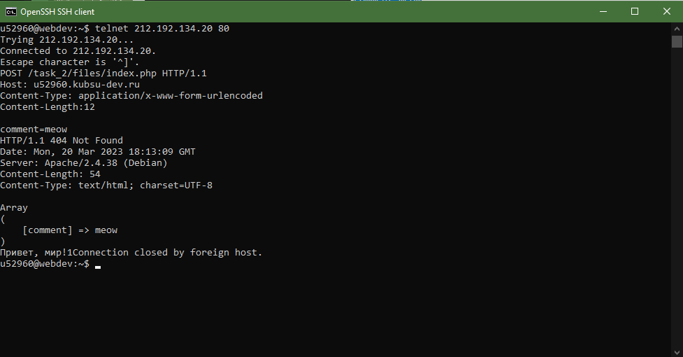

Главная страница методом GET в HTTP 1.0
В командную строку вводим команду telnet и ip-адрес сервера с портом 80. Далее отправляем запрос GET — метод для чтения данных с сайта


Внутренняя странциа методом GET в HTTP 1.1
Подключаемся через telnet как и в предыдушем пункте. Далее после GET указываем требуемый внутренний объект и добавляем заголовок Host, в котором содержится имя домена, для которого предназначен запрос

Размер файла, нескачивая его
Используем метод HEAD, который запрашивает ресурс так же, как и метод GET, но без тела ответа. В заголовке Content-Length содержится нужная информация

Медиатип ресурса
Используется метод HEAD. В заголовке Content-Type содержится нужная информация

Отправка комментария на сервер по адресу
Используем метод POST, который предназначен для отправки данных на сервер. Дополнительно в заголовках указываем тип отправляемых данных и их размер
Первые 100 байт файла
Используем метод HEAD и заголовок Range, в котором указываем диапазон от 0 до 99 и тип этого диапазона (bytes)

Кодировка ресурса
Используем метод HEAD. В заголовке Content-Type содержится нужная информация